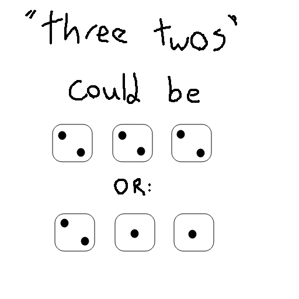
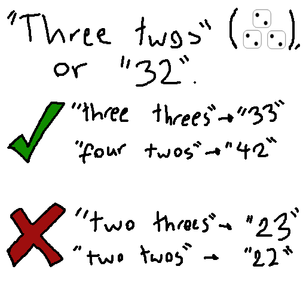

How to play Perudo
Introduction
Perudo, also known as Liar's Dice, Dudo, and a few other names I don't know yet, is a dice game mixing together maths and bluffing. The aim of the game is to be the last player with any dice.
Rules
Each person starts with 5 dice and an opaque cup. This is to help hide the dice, so technically is not necessary, but is highly recommended.
Roll your dice at the beginning of each new round, and then look at them without showing any of the other players.
Making a bid
Now, the first player, with their dice and knowledge of probability, must make a bid on how many of a certain type of dice there are. To clarify, they are bidding on, say, how many sixes there are, or how many threes, and may only make one bid at a time. They are bidding for how many dice there are minimum, not total. The easiest way to make a bid is to say it as "five sixes" ("at least 5 sixes") or "three twos" ("at least 3 twos").
When making these bids, bear in mind that ones (aces) are wild, and are equal to whatever value is currently being bid. For example:

Bidding goes clockwise.
"Dudo"
Once someone (you, in this case) have made a bid, the bid moves onto the next person. How this will be done will be explained shortly, but there is a catch.
If the next person meant to take the bid (some people may play it that anyone can doubt, cough cough us) thinks that your bid is unrealistic or feels unable to raise the bid any more, they can call "dudo", spanish for "I doubt".
In this case, all players would then reveal their dice and count them to see if the bid is accurate or not. If the person making the bid is correct, the doubter loses one die. If the doubter is correct, the person who made the bid loses a die instead.
The person who lost a die in the previous round starts the next.
Raising the bid
The bid must only go up. That is the rule.
Now, imagine the bid of "three twos", or "I believe there are at least three dice showing two on the table". Raising this bid is a matter of raising either the value of the dice or the quantity of the dice so that the resulting value is larger than the last.
Picture the "three twos" as the number 32. Raising this bid to "three threes" is legal, as the number is now 33, which is larger than 32. Equally, raising the bid to "four twos" is also legal, as 42 is bigger than 32.
However, lowering this bid to "two threes" or "two twos" would be illegal, as 23 and 22 are both smaller than 32.

Another example is the bid "six fives", or "65". This could be raised to "six sixes" (66) or "seven twos", "seven threes", "seven fours", et cetera, as 72, 73, and 74 are all larger than 65. However, this bid could not be lowered to "six fours" or "five sixes" as 64 and 56 are both smaller than 65.
This is the second most complex rule in perudo, but once it clicks, it will. Give it time and a few rounds if it's still not sticking.
Aces
This is a complex rule. Feel free to omit it while the players are still learning the bidding mechanic.
Calling "aces" halves the quantity of the bid (rounded up) and sets the value of the dice being bid to one. Therefore, "eight threes" would become "four ones", and "five fives" would become "three ones".
Once aces have been called, each next player has three choices:
- Continue bidding, only increasing the quantity of dice and keeping their value at one
- Revert back to bidding normally by doubling the quantity and choosing any value (the reverse of calling aces)
- Call "dudo"
"Palafico"
Note that this does not apply when there are only two people left.
When a player reaches their last die for the first time, the bidding rules change temporarily. The bidding system changes so that only the quantity of the dice can be changed and not the value.
For example, an opening call of "two threes" can only be followed by "three threes", "four threes", "five threes", etc.
In a palafico round, ones are not wild. A call of "aces" can only be made by the starting player as the first bid, to keep the sentiment of the values having to remain the same throughout the round.
A player can only be palafico once in the game.
The end of the game
As previously stated, being doubted correctly or doubting incorrectly leads to the loss of dice. This starts a new round, leading to everyone reshuffling their dice and the bids starting again at zero.
When a player loses all of their dice, they are out of the game, and when there is only one player standing, they are the winner. You can call them "El Campeón" or "La Campeona" if you want extra spanish points, or just give them a spiteful look. They probably deserve it with their skillful bids and annoyingly smug grin.
Creator's note: sorry about none of the images being perfectly centered. I made them all in a paint rip-off instead of something microsoft powerpoint or something reasonable.